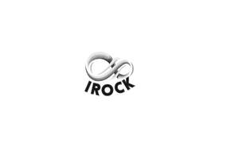

Trade Mark Journal No.2026/012 20 March 2026
UK00004351205 9 March 2026 (9,35,40,42)

- Class 9
- Semi-conductors; electronic chips; computer software for use in processing semiconductor wafers; transistors [electronic]; Structured semi-conductor wafers; single-crystal silicon wafers; semiconductor chips; triodes; Semi-conductor memories; diodes; thyristors; integrated circuits; semiconductor testing apparatus; semiconductor devices.
- Class 35
- Advertising; advertising agency services; rental of advertising time on communication media; commercial administration of the licensing of the goods and services of others; business appraisals; market studies; sales promotion for others; provision of an online marketplace for buyers and sellers of goods and services; marketing; rental of vending machines.
- Class 40
- Custom manufacture of semiconductor wafers; encapsulation of semiconductors; custom manufacture of semiconductor circuits.
- Class 42
- Research in the field of welding; graphic design; technical research; design of integrated circuits; product testing; design of semiconductor chips; research in the area of semiconductor processing technology; consultancy services in the field of technological development; design and development of multimedia products; packaging design.
IROCK ELECTRONIC PTE. LTD.
Representative: Paweł Wowra